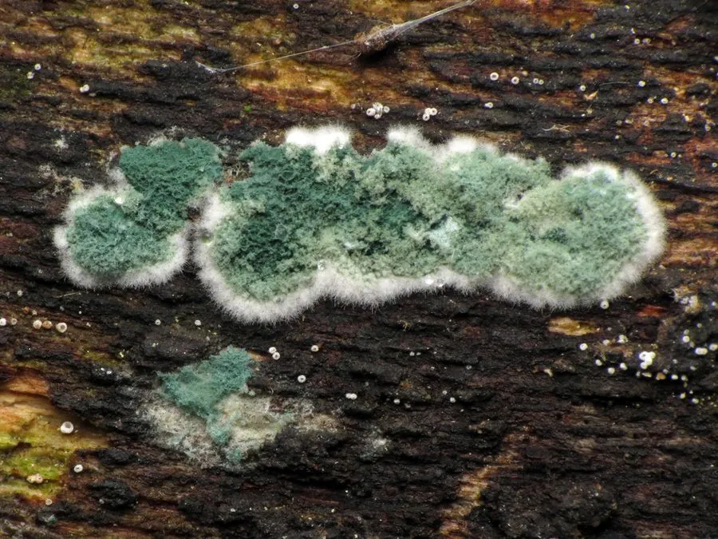

真菌 · 真菌界
绿色木霉 Trichoderma viride

绿色木霉的菌落初白后转为鲜绿色，生长极快，能分泌大量纤维素酶，既是重要的工业菌，也是常用的生物防治菌。
- 分类
- 门子囊菌门纲粪壳菌纲目肉座菌目科肉座菌科属木霉属
- 栖息环境
- 土壤、腐木、植物残体与空气中，温暖潮湿处生长迅速
- 地理分布
- 世界性分布，各类土壤和腐殖质中普遍存在
- 保护级别
- 暂无评估（IUCN 未评估，工业与农业微生物）
物种志
绿色木霉是子囊菌门肉座菌科的真菌，菌丝有隔膜，生长迅速，在培养基上几天就能铺满。菌落初期白色、棉絮状，产孢后变成鲜绿色至黄绿色，因为分生孢子呈绿色。分生孢子梗反复分枝，形成松散的圆锥状孢子簇，瓶梗细长，分生孢子近球形、壁粗糙。有性阶段形成子囊壳，但在自然界较少见。
绿色木霉广泛分布于土壤、腐木、植物残体和空气中，是常见的腐生真菌。它能分泌纤维素酶、几丁质酶等多种酶类，在工业上用于生产纤维素酶和生物燃料的酶解；同时，它能寄生和抑制其他真菌，被开发成生物杀菌剂，用于防治土传病害。不过，木霉也会污染食用菌栽培，造成菇房损失；对免疫力低下的人群，它还可能引起感染，因此使用和接触时要注意防护。
形态与习性
- 菌落初白色，产孢后鲜绿色
- 分生孢子近球形，绿色，壁粗糙
- 产酶纤维素酶、几丁质酶等
- 生物防治寄生并抑制多种植物病原真菌
- 工业用途生产纤维素酶，用于生物质转化
- 危害污染食用菌栽培，免疫力低下者可感染
- 生境土壤、腐木与植物残体
趣味知识
- 绿色木霉的菌落先是白色，产孢后很快变成鲜绿色。
- 它能分泌纤维素酶，是生物燃料研究的常用菌。
- 木霉能寄生其他真菌，被做成生物杀菌剂防治土传病害。
- 种菇的人最怕木霉，它一旦污染菇房就很难清除。